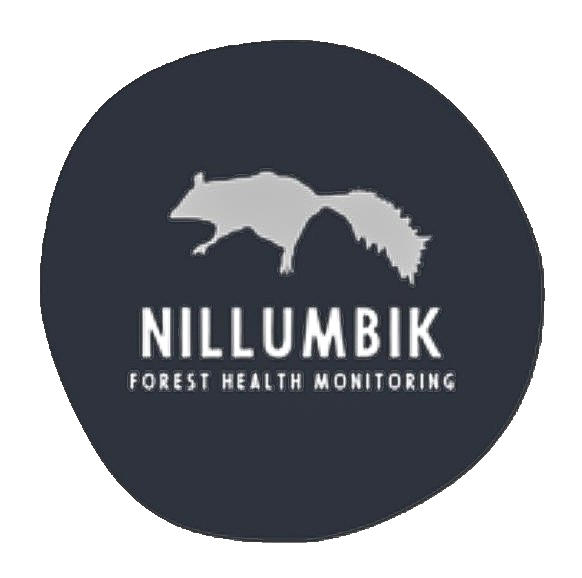

Since 2017, Nillumbik Shire Council has been working with partners, landholders, Landcare groups, Melbourne Water, Parks Victoria and many others to build a unique dataset tracking which animal species are present across our Shire. We’re pleased to share this information with you here — free to explore and download.
On the main map you can choose to view:
Simply click a zone to see its data (or hold Ctrl/Cmd to select multiple). Use the filter on the right to focus on a particular group of animals (birds, mammals, reptiles) or leave it on “All Taxa” for the full picture. Any selection can be downloaded directly using the Download Data button at the bottom right.
We’re always looking for ways to improve how we share results and would love your feedback on
new features. For more information on the Forest Health Monitoring Program, visit:
👉
Forest Health Monitoring Program
Thank you for visiting — and enjoy exploring your local wildlife data!